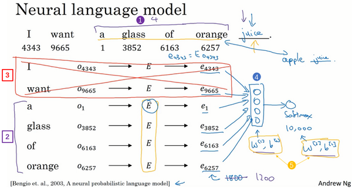
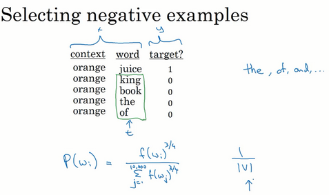

Lesson5 week2
第二周 自然语言处理与词嵌入（Natural Language Processing and Word Embeddings）¶
- 第二周 自然语言处理与词嵌入（Natural Language Processing and Word Embeddings）
- 2.1 词汇表征（Word Representation）
- 2.2 使用词嵌入（Using Word Embeddings）
- 2.3 词嵌入的特性（Properties of Word Embeddings）
- 2.4 嵌入矩阵（Embedding Matrix）
- 2.5 学习词嵌入（Learning Word Embeddings）
- 2.6 Word2Vec
- 2.7 负采样（Negative Sampling）
- 2.8 GloVe 词向量（GloVe Word Vectors）
- 2.9 情感分类（Sentiment Classification）
- 2.10 词嵌入除偏（Debiasing Word Embeddings）
2.1 词汇表征（Word Representation）¶
上周我们学习了RNN、GRU单元和LSTM单元。本周你会看到我们如何把这些知识用到NLP上，用于自然语言处理，深度学习已经给这一领域带来了革命性的变革。其中一个很关键的概念就是词嵌入（word embeddings），这是语言表示的一种方式，可以让算法自动的理解一些类似的词，比如男人对女人，比如国王对王后，还有其他很多的例子。通过词嵌入的概念你就可以构建NLP应用了，即使你的模型标记的训练集相对较小。这周的最后我们会消除词嵌入的偏差，就是去除不想要的特性，或者学习算法有时会学到的其他类型的偏差。

现在我们先开始讨论词汇表示，目前为止我们一直都是用词汇表来表示词，上周提到的词汇表，可能是10000个单词，我们一直用one-hot向量来表示词。比如如果man（上图编号1所示）在词典里是第5391个，那么就可以表示成一个向量，只在第5391处为1（上图编号2所示），我们用\(O_{5391}\)代表这个量，这里的\(O\)代表one-hot。接下来，如果woman是编号9853（上图编号3所示），那么就可以用\(O_{9853}\)来表示，这个向量只在9853处为1（上图编号4所示），其他为0，其他的词king、queen、apple、orange都可以这样表示出来这种表示方法的一大缺点就是它把每个词孤立起来，这样使得算法对相关词的泛化能力不强。
举个例子，假如你已经学习到了一个语言模型，当你看到“I want a glass of orange ___”，那么下一个词会是什么？很可能是juice。即使你的学习算法已经学到了“I want a glass of orange juice”这样一个很可能的句子，但如果看到“I want a glass of apple ___”，因为算法不知道apple和orange的关系很接近，就像man和woman，king和queen一样。所以算法很难从已经知道的orange juice是一个常见的东西，而明白apple juice也是很常见的东西或者说常见的句子。这是因为任何两个one-hot向量的内积都是0，如果你取两个向量，比如king和queen，然后计算它们的内积，结果就是0。如果用apple和orange来计算它们的内积，结果也是0。很难区分它们之间的差别，因为这些向量内积都是一样的，所以无法知道apple和orange要比king和orange，或者queen和orange相似地多。
换一种表示方式会更好，如果我们不用one-hot表示，而是用特征化的表示来表示每个词，man，woman，king，queen，apple，orange或者词典里的任何一个单词，我们学习这些词的特征或者数值。

举个例子，对于这些词，比如我们想知道这些词与Gender（性别）的关系。假定男性的性别为-1，女性的性别为+1，那么man的性别值可能就是-1，而woman就是-1。最终根据经验king就是-0.95，queen是+0.97，apple和orange没有性别可言。
另一个特征可以是这些词有多Royal（高贵），所以这些词，man，woman和高贵没太关系，所以它们的特征值接近0。而king和queen很高贵，apple和orange跟高贵也没太大关系。
那么Age（年龄）呢？man和woman一般没有年龄的意思，也许man和woman隐含着成年人的意思，但也可能是介于young和old之间，所以它们（man和woman）的值也接近0。而通常king和queen都是成年人，apple和orange跟年龄更没什么关系了。
还有一个特征，这个词是否是Food（食物），man不是食物，woman不是食物，king和queen也不是，但apple和orange是食物。
当然还可以有很多的其他特征，从Size（尺寸大小），Cost（花费多少），这个东西是不是alive（活的），是不是一个Action（动作），或者是不是Noun（名词）或者是不是Verb（动词），还是其他的等等。
所以你可以想很多的特征，为了说明，我们假设有300个不同的特征，这样的话你就有了这一列数字（上图编号1所示），这里我只写了4个，实际上是300个数字，这样就组成了一个300维的向量来表示man这个词。接下来，我想用\(e_{5391}\)这个符号来表示，就像这样（上图编号2所示）。同样这个300维的向量，我用\(e_{9853}\)代表这个300维的向量用来表示woman这个词（上图编号3所示），这些其他的例子也一样。现在，如果用这种表示方法来表示apple和orange这些词，那么apple和orange的这种表示肯定会非常相似，可能有些特征不太一样，因为orange的颜色口味，apple的颜色口味，或者其他的一些特征会不太一样，但总的来说apple和orange的大部分特征实际上都一样，或者说都有相似的值。这样对于已经知道orange juice的算法很大几率上也会明白apple juice这个东西，这样对于不同的单词算法会泛化的更好。
后面的几个视频，我们会找到一个学习词嵌入的方式，这里只是希望你能理解这种高维特征的表示能够比one-hot更好的表示不同的单词。而我们最终学习的特征不会像这里一样这么好理解，没有像第一个特征是性别，第二个特征是高贵，第三个特征是年龄等等这些，新的特征表示的东西肯定会更难搞清楚。尽管如此，接下来要学的特征表示方法却能使算法高效地发现apple和orange会比king和orange，queen和orange更加相似。

如果我们能够学习到一个300维的特征向量，或者说300维的词嵌入，通常我们可以做一件事，把这300维的数据嵌入到一个二维空间里，这样就可以可视化了。常用的可视化算法是t-SNE算法，来自于Laurens van der Maaten 和 Geoff Hinton的论文。如果观察这种词嵌入的表示方法，你会发现man和woman这些词聚集在一块（上图编号1所示），king和queen聚集在一块（上图编号2所示），这些都是人，也都聚集在一起（上图编号3所示）。动物都聚集在一起（上图编号4所示），水果也都聚集在一起（上图编号5所示），像1、2、3、4这些数字也聚集在一起（上图编号6所示）。如果把这些生物看成一个整体，他们也聚集在一起（上图编号7所示）。
在网上你可能会看到像这样的图用来可视化，300维或者更高维度的嵌入。希望你能有个整体的概念，这种词嵌入算法对于相近的概念，学到的特征也比较类似，在对这些概念可视化的时候，这些概念就比较相似，最终把它们映射为相似的特征向量。这种表示方式用的是在300维空间里的特征表示，这叫做嵌入（embeddings）。之所以叫嵌入的原因是，你可以想象一个300维的空间，我画不出来300维的空间，这里用个3维的代替（上图编号8所示）。现在取每一个单词比如orange，它对应一个3维的特征向量，所以这个词就被嵌在这个300维空间里的一个点上了（上图编号9所示），apple这个词就被嵌在这个300维空间的另一个点上了（上图编号10所示）。为了可视化，t-SNE算法把这个空间映射到低维空间，你可以画出一个2维图像然后观察，这就是这个术语嵌入的来源。
词嵌入已经是NLP领域最重要的概念之一了，在自然语言处理领域。本节视频中你已经知道为什么要学习或者使用词嵌入了，下节视频我们会深入讲解如何用这些算法构建NLP算法。
2.2 使用词嵌入（Using Word Embeddings）¶
上一个视频中，你已经了解不同单词的特征化表示了。这节你会看到我们如何把这种表示方法应用到NLP应用中。
我们从一个例子开始，我们继续用命名实体识别的例子，如果你要找出人名，假如有一个句子：“Sally Johnson is an orange farmer.”（Sally Johnson是一个种橙子的农民），你会发现Sally Johnson就是一个人名，所以这里的输出为1。之所以能确定Sally Johnson是一个人名而不是一个公司名，是因为你知道种橙子的农民一定是一个人，前面我们已经讨论过用one-hot来表示这些单词，\(x^{<1>}\) ，\(x^{< 2 >}\)等等。

但是如果你用特征化表示方法，嵌入的向量，也就是我们在上个视频中讨论的。那么用词嵌入作为输入训练好的模型，如果你看到一个新的输入：“Robert Lin is an apple farmer.”（Robert Lin是一个种苹果的农民），因为知道orange和apple很相近，那么你的算法很容易就知道Robert Lin也是一个人，也是一个人的名字。一个有意思的情况是，要是测试集里这句话不是“Robert Lin is an apple farmer.”，而是不太常见的词怎么办？要是你看到：“Robert Lin is a durian cultivator.”（Robert Lin是一个榴莲培育家）怎么办？榴莲（durian）是一种比较稀罕的水果，这种水果在新加坡和其他一些国家流行。如果对于一个命名实体识别任务，你只有一个很小的标记的训练集，你的训练集里甚至可能没有durian（榴莲）或者cultivator（培育家）这两个词。但是如果你有一个已经学好的词嵌入，它会告诉你durian（榴莲）是水果，就像orange（橙子）一样，并且cultivator（培育家），做培育工作的人其实跟farmer（农民）差不多，那么你就有可能从你的训练集里的“an orange farmer”（种橙子的农民）归纳出“a durian cultivator”（榴莲培育家）也是一个人。
词嵌入能够达到这种效果，其中一个原因就是学习词嵌入的算法会考察非常大的文本集，也许是从网上找到的，这样你可以考察很大的数据集可以是1亿个单词，甚至达到100亿也都是合理的，大量的无标签的文本的训练集。通过考察大量的无标签文本，很多都是可以免费下载的，你可以发现orange（橙子）和durian（榴莲）相近，farmer（农民）和cultivator（培育家）相近。因此学习这种嵌入表达，把它们都聚集在一块，通过读取大量的互联网文本发现了orange（橙子）和durian（榴莲）都是水果。接下来你可以把这个词嵌入应用到你的命名实体识别任务当中，尽管你只有一个很小的训练集，也许训练集里有100,000个单词，甚至更小，这就使得你可以使用迁移学习，把你从互联网上免费获得的大量的无标签文本中学习到的知识，能够分辨orange（橙子）、apple（苹果）和durian（榴莲）都是水果的知识，然后把这些知识迁移到一个任务中，比如你只有少量标记的训练数据集的命名实体识别任务中。当然了，这里为了简化我只画了单向的RNN，事实上如果你想用在命名实体识别任务上，你应该用一个双向的RNN，而不是这样一个简单的。

总结一下，这是如何用词嵌入做迁移学习的步骤。
第一步，先从大量的文本集中学习词嵌入。一个非常大的文本集，或者可以下载网上预训练好的词嵌入模型，网上你可以找到不少，词嵌入模型并且都有许可。
第二步，你可以用这些词嵌入模型把它迁移到你的新的只有少量标注训练集的任务中，比如说用这个300维的词嵌入来表示你的单词。这样做的一个好处就是你可以用更低维度的特征向量代替原来的10000维的one-hot向量，现在你可以用一个300维更加紧凑的向量。尽管one-hot向量很快计算，而学到的用于词嵌入的300维的向量会更加紧凑。
第三步，当你在你新的任务上训练模型时，在你的命名实体识别任务上，只有少量的标记数据集上，你可以自己选择要不要继续微调，用新的数据调整词嵌入。实际中，只有这个第二步中有很大的数据集你才会这样做，如果你标记的数据集不是很大，通常我不会在微调词嵌入上费力气。
当你的任务的训练集相对较小时，词嵌入的作用最明显，所以它广泛用于NLP领域。我只提到一些，不要太担心这些术语（下问列举的一些NLP任务），它已经用在命名实体识别，用在文本摘要，用在文本解析、指代消解，这些都是非常标准的NLP任务。
词嵌入在语言模型、机器翻译领域用的少一些，尤其是你做语言模型或者机器翻译任务时，这些任务你有大量的数据。在其他的迁移学习情形中也一样，如果你从某一任务A迁移到某个任务B，只有A中有大量数据，而B中数据少时，迁移的过程才有用。所以对于很多NLP任务这些都是对的，而对于一些语言模型和机器翻译则不然。

最后，词嵌入和人脸编码之间有奇妙的关系，你已经在前面的课程学到了关于人脸编码的知识了，如果你上了卷积神经网络的课程的话。你应该还记得对于人脸识别，我们训练了一个Siamese网络结构，这个网络会学习不同人脸的一个128维表示，然后通过比较编码结果来判断两个图片是否是同一个人脸，这个词嵌入的意思和这个差不多。在人脸识别领域大家喜欢用编码这个词来指代这些向量\(f(x^{\left(i \right)})\)，\(f(x^{\left( j\right)})\)（上图编号1所示），人脸识别领域和这里的词嵌入有一个不同就是，在人脸识别中我们训练一个网络，任给一个人脸照片，甚至是没有见过的照片，神经网络都会计算出相应的一个编码结果。上完后面几节课，你会更明白，我们学习词嵌入则是有一个固定的词汇表，比如10000个单词，我们学习向量\(e_{1}\)到\(e_{10000}\)，学习一个固定的编码，每一个词汇表的单词的固定嵌入，这就是人脸识别与我们接下来几节视频要讨论的算法之间的一个不同之处。这里的术语编码（encoding）和嵌入（embedding）可以互换，所以刚才讲的差别不是因为术语不一样，这个差别就是，人脸识别中的算法未来可能涉及到海量的人脸照片，而自然语言处理有一个固定的词汇表，而像一些没有出现过的单词我们就记为未知单词。
这节视频里，你看到如何用词嵌入来实现这种类型的迁移学习，并且通过替换原来的one-hot表示，而是用之前的嵌入的向量，你的算法会泛化的更好，你也可以从较少的标记数据中进行学习。接下来我会给你展示一些词嵌入的特性，这之后再讨论学习这些词嵌入的算法。下个视频我们会看到词嵌入在做类比推理中发挥的作用。
2.3 词嵌入的特性（Properties of Word Embeddings）¶
到现在，你应该明白了词嵌入是如何帮助你构建自然语言处理应用的。词嵌入还有一个迷人的特性就是它还能帮助实现类比推理，尽管类比推理可能不是自然语言处理应用中最重要的，不过它能帮助人们理解词嵌入做了什么，以及词嵌入能够做什么，让我们来一探究竟。
这是一系列你希望词嵌入可以捕捉的单词的特征表示，假如我提出一个问题，man如果对应woman，那么king应该对应什么？你们应该都能猜到king应该对应queen。能否有一种算法来自动推导出这种关系，下面就是实现的方法。

我们用一个四维向量来表示man，我们用\(e_{5391}\)来表示，不过在这节视频中我们先把它（上图编号1所示）称为\(e_{\text{man}}\)，而旁边这个（上图编号2所示）表示woman的嵌入向量，称它为\(e_{\text{woman}}\)，对king和queen也是用一样的表示方法。在该例中，假设你用的是四维的嵌入向量，而不是比较典型的50到1000维的向量。这些向量有一个有趣的特性，就是假如你有向量\(e_{\text{man}}\)和\(e_{\text{woman}}\)，将它们进行减法运算，即
类似的，假如你用\(e_{\text{king}}\)减去\(e_{\text{queen}}\)，最后也会得到一样的结果，即
这个结果表示，man和woman主要的差异是gender（性别）上的差异，而king和queen之间的主要差异，根据向量的表示，也是gender（性别）上的差异，这就是为什么\(e_{\text{man}}- e_{\text{woman}}\)和\(e_{\text{king}} - e_{\text{queen}}\)结果是相同的。所以得出这种类比推理的结论的方法就是，当算法被问及man对woman相当于king对什么时，算法所做的就是计算\(e_{\text{man}}-e_{\text{woman}}\)，然后找出一个向量也就是找出一个词，使得\(e_{\text{man}}-e_{\text{woman}}\)≈\(\ e_{\text{king}}- e_{?}\)，也就是说，当这个新词是queen时，式子的左边会近似地等于右边。这种思想首先是被Tomas Mikolov 和 Wen-tau Yih还有Geoffrey Zweig提出的，这是词嵌入领域影响力最为惊人和显著的成果之一，这种思想帮助了研究者们对词嵌入领域建立了更深刻的理解。
（Mikolov T, Yih W T, Zweig G. Linguistic regularities in continuous space word representations[J]. In HLT-NAACL, 2013.）

让我们来正式地探讨一下应该如何把这种思想写成算法。在图中，词嵌入向量在一个可能有300维的空间里，于是单词man代表的就是空间中的一个点，另一个单词woman代表空间另一个点，单词king也代表一个点，还有单词queen也在另一点上（上图编号1方框内所示的点）。事实上，我们在上个幻灯片所展示的就是向量man和woman的差值非常接近于向量king和queen之间的差值，我所画的这个箭头（上图编号2所示）代表的就是向量在gender（性别）这一维的差，不过不要忘了这些点是在300维的空间里。为了得出这样的类比推理，计算当man对于woman，那么king对于什么，你能做的就是找到单词w来使得，\(e_{\text{man}}-e_{\text{woman}}≈ e_{\text{king}} - e_{w}\)这个等式成立，你需要的就是找到单词w来最大化\(e_{w}\)与\(e_{\text{king}} - e_{\text{man}} + e_{\text{woman}}\)的相似度，即
\(Find\ word\ w:argmax \ Sim(e_{w},e_{\text{king}} - e_{\text{man}} + e_{\text{woman}})\)
所以我做的就是我把这个\(e_{w}\)全部放到等式的一边，于是等式的另一边就会是\(e_{\text{king}}- e_{\text{man}} + e_{\text{woman}}\)。我们有一些用于测算\(e_{w}\)和\(e_{\text{king}} -e_{\text{man}} + e_{\text{woman}}\)之间的相似度的函数，然后通过方程找到一个使得相似度最大的单词，如果结果理想的话会得到单词queen。值得注意的是这种方法真的有效，如果你学习一些词嵌入，通过算法来找到使得相似度最大化的单词w，你确实可以得到完全正确的答案。不过这取决于过程中的细节，如果你查看一些研究论文就不难发现，通过这种方法来做类比推理准确率大概只有30%~75%，只要算法猜中了单词，就把该次计算视为正确，从而计算出准确率，在该例子中，算法选出了单词queen。

在继续下一步之前，我想再说明一下左边的这幅图（上图编号1所示），在之前我们谈到过用t-SNE算法来将单词可视化。t-SNE算法所做的就是把这些300维的数据用一种非线性的方式映射到2维平面上，可以得知t-SNE中这种映射很复杂而且很非线性。在进行t-SNE映射之后，你不能总是期望使等式成立的关系，会像左边那样成一个平行四边形，尽管在这个例子最初的300维的空间内你可以依赖这种平行四边形的关系来找到使等式成立的一对类比，通过t-SNE算法映射出的图像可能是正确的。但在大多数情况下，由于t-SNE的非线性映射，你就没法再指望这种平行四边形了，很多这种平行四边形的类比关系在t-SNE映射中都会失去原貌。
现在，再继续之前，我想再快速地列举一个最常用的相似度函数，这个最常用的相似度函数叫做余弦相似度。这是我们上个幻灯片所得到的等式（下图编号1所示），在余弦相似度中，假如在向量\(u\)和\(v\)之间定义相似度:\(\text{sim}\left( u,v \right) = \frac{u^{T}v}{\left| \left| u \right| \right|_{2}\left| \left| v \right| \right|_{2}}\)
现在我们先不看分母，分子其实就是\(u\)和\(v\)的内积。如果u和v非常相似，那么它们的内积将会很大，把整个式子叫做余弦相似度，其实就是因为该式是\(u\)和\(v\)的夹角的余弦值，所以这个角（下图编号2所示）就是Φ角，这个公式实际就是计算两向量夹角Φ角的余弦。你应该还记得在微积分中，Φ角的余弦图像是这样的（下图编号3所示），所以夹角为0度时，余弦相似度就是1，当夹角是90度角时余弦相似度就是0，当它们是180度时，图像完全跑到了相反的方向，这时相似度等于-1，这就是为什么余弦相似度对于这种类比工作能起到非常好的效果。
距离用平方距离或者欧氏距离来表示:\(\left| \left| u - v \right| \right|^{2}\)
 参考资料：余弦相似度
为了测量两个词的相似程度，我们需要一种方法来测量两个词的两个嵌入向量之间的相似程度。 给定两个向量\(u\)和\(v\)，余弦相似度定义如下：
\({CosineSimilarity(u, v)} = \frac {u . v} {||u||_2 ||v||_2} = cos(\theta) \tag{1}\)
其中 \(u.v\) 是两个向量的点积（或内积），\(||u||_2\)是向量\(u\)的范数（或长度），并且 \(\theta\) 是向量\(u\)和\(v\)之间的角度。这种相似性取决于角度在向量\(u\)和\(v\)之间。如果向量\(u\)和\(v\)非常相似，它们的余弦相似性将接近1; 如果它们不相似，则余弦相似性将取较小的值。
参考资料：余弦相似度
为了测量两个词的相似程度，我们需要一种方法来测量两个词的两个嵌入向量之间的相似程度。 给定两个向量\(u\)和\(v\)，余弦相似度定义如下：
\({CosineSimilarity(u, v)} = \frac {u . v} {||u||_2 ||v||_2} = cos(\theta) \tag{1}\)
其中 \(u.v\) 是两个向量的点积（或内积），\(||u||_2\)是向量\(u\)的范数（或长度），并且 \(\theta\) 是向量\(u\)和\(v\)之间的角度。这种相似性取决于角度在向量\(u\)和\(v\)之间。如果向量\(u\)和\(v\)非常相似，它们的余弦相似性将接近1; 如果它们不相似，则余弦相似性将取较小的值。
 图1：两个向量之间角度的余弦是衡量它们有多相似的指标，角度越小，两个向量越相似。
图1：两个向量之间角度的余弦是衡量它们有多相似的指标，角度越小，两个向量越相似。
从学术上来说，比起测量相似度，这个函数更容易测量的是相异度，所以我们需要对其取负，这个函数才能正常工作，不过我还是觉得余弦相似度用得更多一点，这两者的主要区别是它们对\(u\)和\(v\)之间的距离标准化的方式不同。
词嵌入的一个显著成果就是，可学习的类比关系的一般性。举个例子，它能学会man对于woman相当于boy对于girl，因为man和woman之间和king和queen之间，还有boy和girl之间的向量差在gender（性别）这一维都是一样的。它还能学习Canada（加拿大）的首都是Ottawa（渥太华），而渥太华对于加拿大相当于Nairobi（内罗毕）对于Kenya（肯尼亚），这些都是国家中首都城市名字。它还能学习big对于bigger相当于tall对于taller，还能学习Yen（円）对于Janpan（日本），円是日本的货币单位，相当于Ruble（卢比）对于Russia（俄罗斯）。这些东西都能够学习，只要你在大型的文本语料库上实现一个词嵌入学习算法，只要从足够大的语料库中进行学习，它就能自主地发现这些模式。
在本节视频中，你见到了词嵌入是如何被用于类比推理的，可能你不会自己动手构建一个类比推理系统作为一项应用，不过希望在这些可学习的类特征的表示方式能够给你一些直观的感受。你还看知道了余弦相似度可以作为一种衡量两个词嵌入向量间相似度的办法，我们谈了许多有关这些嵌入的特性，以及如何使用它们。下节视频中，我们来讨论如何真正的学习这些词嵌入。
2.4 嵌入矩阵（Embedding Matrix）¶
接下来我们要将学习词嵌入这一问题具体化，当你应用算法来学习词嵌入时，实际上是学习一个嵌入矩阵，我们来看一下这是什么意思。
和之前一样，假设我们的词汇表含有10,000个单词，词汇表里有a，aaron，orange，zulu，可能还有一个未知词标记\<UNK>。我们要做的就是学习一个嵌入矩阵\(E\)，它将是一个300×10,000的矩阵，如果你的词汇表里有10,000个，或者加上未知词就是10,001维。这个矩阵的各列代表的是词汇表中10,000个不同的单词所代表的不同向量。假设orange的单词编号是6257（下图编号1所示），代表词汇表中第6257个单词，我们用符号\(O_{6527}\) 来表示这个one-hot向量，这个向量除了第6527个位置上是1（下图编号2所示），其余各处都为0，显然它是一个10,000维的列向量，它只在一个位置上有1，它不像图上画的那么短，它的高度应该和左边的嵌入矩阵的宽度相等。

假设这个嵌入矩阵叫做矩阵\(E\)，注意如果用\(E\)去乘以右边的one-hot向量（上图编号3所示），也就是\(O_{6527}\)，那么就会得到一个300维的向量，\(E\)是300×10,000的，\(O_{6527}\)是10,000×1的，所以它们的积是300×1的，即300维的向量。要计算这个向量的第一个元素，你需要做的是把\(E\)的第一行（上图编号4所示）和\(O_{6527}\)的整列相乘，不过\(O_{6527}\)的所有元素都是0，只有6257位置上是1，最后你得到的这个向量的第一个元素（上图编号5所示）就是orange这一列下的数字（上图编号6所示）。然后我们要计算这个向量的第二个元素，就是把\(E\)的第二行（上图编号7所示）和这个\(O_{6527}\)相乘，和之前一样，然后得到第二个元素（上图编号8所示），以此类推，直到你得到这个向量剩下的所有元素（上图编号9所示）。
这就是为什么把矩阵\(E\)和这个one-hot向量相乘，最后得到的其实就是这个300维的列，就是单词orange下的这一列，它等于\(e_{6257}\)，这个符号是我们用来表示这个300×1的嵌入向量的符号，它表示的单词是orange。

更广泛来说，假如说有某个单词w，那么\(e_{w}\)就代表单词w的嵌入向量。同样，\(EO_{j}\)，\(O_{j}\)就是只有第\(j\)个位置是1的one-hot向量，得到的结果就是\(e_{j}\)，它表示的是字典中单词j的嵌入向量。
在这一小节中，要记住的一件事就是我们的目标是学习一个嵌入矩阵\(E\)。在下节视频中你将会随机地初始化矩阵\(E\)，然后使用梯度下降法来学习这个300×10,000的矩阵中的各个参数，\(E\)乘以这个one-hot向量（上图编号1所示）会得到嵌入向量。再多说一点，当我们写这个等式（上图编号2所示）的时候，写出这些符号是很方便的，代表用矩阵\(E\)乘以one-hot向量\(O_{j}\)。但当你动手实现时，用大量的矩阵和向量相乘来计算它，效率是很低下的，因为one-hot向量是一个维度非常高的向量，并且几乎所有元素都是0，所以矩阵向量相乘效率太低，因为我们要乘以一大堆的0。所以在实践中你会使用一个专门的函数来单独查找矩阵\(E\)的某列，而不是用通常的矩阵乘法来做，但是在画示意图时（上图所示，即矩阵\(E\)乘以one-hot向量示意图），这样写比较方便。但是例如在Keras中就有一个嵌入层，然后我们用这个嵌入层更有效地从嵌入矩阵中提取出你需要的列，而不是对矩阵进行很慢很复杂的乘法运算。
在本视频中你见到了在学习嵌入向量的过程中用来描述这些算法的符号以及关键术语，矩阵\(E\)它包含了词汇表中所有单词的嵌入向量。在下节视频中，我们将讨论学习矩阵\(E\)的具体算法。
2.5 学习词嵌入（Learning Word Embeddings）¶
在本节视频中，你将要学习一些具体的算法来学习词嵌入。在深度学习应用于学习词嵌入的历史上，人们一开始使用的算法比较复杂，但随着时间推移，研究者们不断发现他们能用更加简单的算法来达到一样好的效果，特别是在数据集很大的情况下。但有一件事情就是，现在很多最流行的算法都十分简单，如果我一开始就介绍这些简单的算法，你可能会觉得这有点神奇，这么简单的算法究竟是怎么起作用的？稍微复杂一些的算法开始，因为我觉得这样更容易对算法的运作方式有一个更直观的了解，之后我们会对这些算法进行简化，使你能够明白即使一些简单的算法也能得到非常好的结果，我们开始吧。
假如你在构建一个语言模型，并且用神经网络来实现这个模型。于是在训练过程中，你可能想要你的神经网络能够做到比如输入：“I want a glass of orange ___.”，然后预测这句话的下一个词。在每个单词下面，我都写上了这些单词对应词汇表中的索引。实践证明，建立一个语言模型是学习词嵌入的好方法，我提出的这些想法是源于Yoshua Bengio，Rejean Ducharme，Pascal Vincent，Rejean Ducharme，Pascal Vincent还有Christian Jauvin。

下面我将介绍如何建立神经网络来预测序列中的下一个单词，让我为这些词列一个表格，“I want a glass of orange”，我们从第一个词I开始，建立一个one-hot向量表示这个单词I。这是一个one-hot向量（上图编号1所示），在第4343个位置是1，它是一个10,000维的向量。然后要做的就是生成一个参数矩阵\(E\)，然后用\(E\)乘以\(O_{4343}\)，得到嵌入向量\(e_{4343}\)，这一步意味着\(e_{4343}\)是由矩阵\(E\)乘以one-hot向量得到的（上图编号2所示）。然后我们对其他的词也做相同的操作，单词want在第9665个，我们将\(E\)与这个one-hot向量（\(O_{9665}\)）相乘得到嵌入向量\(e_{9665}\)。对其他单词也是一样，a是字典中的第一个词，因为a是第一个字母，由\(O_{1}\)得到\(e_{1}\)。同样地，其他单词也这样操作。
于是现在你有许多300维的嵌入向量。我们能做的就是把它们全部放进神经网络中（上图编号3所示），经过神经网络以后再通过softmax层（上图编号4所示），这个softmax也有自己的参数，然后这个softmax分类器会在10,000个可能的输出中预测结尾这个单词。假如说在训练集中有juice这个词，训练过程中softmax的目标就是预测出单词juice，就是结尾的这个单词。这个隐藏层（上图编号3所示）有自己的参数，我这里用\(W^{\left\lbrack1 \right\rbrack}\)和\(b^{\left\lbrack 1\right\rbrack}\)来表示，这个softmax层（上图编号4所示）也有自己的参数\(W^{\left\lbrack2 \right\rbrack}\)和\(b^{\left\lbrack 2\right\rbrack}\)。如果它们用的是300维大小的嵌入向量，而这里有6个词，所以用6×300，所以这个输入会是一个1800维的向量，这是通过将这6个嵌入向量堆在一起得到的。

实际上更常见的是有一个固定的历史窗口，举个例子，你总是想预测给定四个单词（上图编号1所示）后的下一个单词，注意这里的4是算法的超参数。这就是如何适应很长或者很短的句子，方法就是总是只看前4个单词，所以说我只用这4个单词（上图编号2所示）而不去看这几个词（上图编号3所示）。如果你一直使用一个4个词的历史窗口，这就意味着你的神经网络会输入一个1200维的特征变量到这个层中（上图编号4所示），然后再通过softmax来预测输出，选择有很多种，用一个固定的历史窗口就意味着你可以处理任意长度的句子，因为输入的维度总是固定的。所以这个模型的参数就是矩阵\(E\)，对所有的单词用的都是同一个矩阵\(E\)，而不是对应不同的位置上的不同单词用不同的矩阵。然后这些权重（上图编号5所示）也都是算法的参数，你可以用反向传播来进行梯度下降来最大化训练集似然，通过序列中给定的4个单词去重复地预测出语料库中下一个单词什么。
事实上通过这个算法能很好地学习词嵌入，原因是，如果你还记得我们的orange jucie，apple juice的例子，在这个算法的激励下，apple和orange会学到很相似的嵌入，这样做能够让算法更好地拟合训练集，因为它有时看到的是orange juice，有时看到的是apple juice。如果你只用一个300维的特征向量来表示所有这些词，算法会发现要想最好地拟合训练集，就要使apple（苹果）、orange（橘子）、grape（葡萄）和pear（梨）等等，还有像durian（榴莲）这种很稀有的水果都拥有相似的特征向量。
这就是早期最成功的学习词嵌入，学习这个矩阵\(E\)的算法之一。现在我们先概括一下这个算法，看看我们该怎样来推导出更加简单的算法。现在我想用一个更复杂的句子作为例子来解释这些算法，假设在你的训练集中有这样一个更长的句子：“I want a glass of orange juice to go along with my cereal.”。我们在上个幻灯片看到的是算法预测出了某个单词juice，我们把它叫做目标词（下图编号1所示），它是通过一些上下文，在本例中也就是这前4个词（下图编号2所示）推导出来的。如果你的目标是学习一个嵌入向量，研究人员已经尝试过很多不同类型的上下文。如果你要建立一个语言模型，那么一般选取目标词之前的几个词作为上下文。但如果你的目标不是学习语言模型本身的话，那么你可以选择其他的上下文。

比如说，你可以提出这样一个学习问题，它的上下文是左边和右边的四个词，你可以把目标词左右各4个词作为上下文（上图编号3所示）。这就意味着我们提出了一个这样的问题，算法获得左边4个词，也就是a glass of orange，还有右边四个词to go along with，然后要求预测出中间这个词（上图编号4所示）。提出这样一个问题，这个问题需要将左边的还有右边这4个词的嵌入向量提供给神经网络，就像我们之前做的那样来预测中间的单词是什么，来预测中间的目标词，这也可以用来学习词嵌入。
或者你想用一个更简单的上下文，也许只提供目标词的前一个词，比如只给出orange这个词来预测orange后面是什么（上图编号5所示），这将会是不同的学习问题。只给出一个词orange来预测下一个词是什么（上图编号6所示），你可以构建一个神经网络，只把目标词的前一个词或者说前一个词的嵌入向量输入神经网络来预测该词的下一个词。
还有一个效果非常好的做法就是上下文是附近一个单词，它可能会告诉你单词glass（上图编号7所示）是一个邻近的单词。或者说我看见了单词glass，然后附近有一个词和glass位置相近，那么这个词会是什么（上图编号8所示）？这就是用附近的一个单词作为上下文。我们将在下节视频中把它公式化，这用的是一种Skip-Gram模型的思想。这是一个简单算法的例子，因为上下文相当的简单，比起之前4个词，现在只有1个，但是这种算法依然能工作得很好。
研究者发现，如果你真想建立一个语言模型，用目标词的前几个单词作为上下文是常见做法（上图编号9所示）。但如果你的目标是学习词嵌入，那么你就可以用这些其他类型的上下文（上图编号10所示），它们也能得到很好的词嵌入。我会在下节视频详细介绍这些，我们会谈到Word2Vec模型。
总结一下，在本节视频中你学习了语言模型问题，模型提出了一个机器学习问题，即输入一些上下文，例如目标词的前4个词然后预测出目标词，学习了提出这些问题是怎样帮助学习词嵌入的。在下节视频，你将看到如何用更简单的上下文和更简单的算法来建立从上下文到目标词的映射，这将让你能够更好地学习词嵌入，一起进入下节视频学习Word2Vec模型。
2.6 Word2Vec¶
在上个视频中你已经见到了如何学习一个神经语言模型来得到更好的词嵌入，在本视频中你会见到 Word2Vec算法，这是一种简单而且计算时更加高效的方式来学习这种类型的嵌入，让我们来看看。

本视频中的大多数的想法来源于Tomas Mikolov，Kai Chen，Greg Corrado 和 Jeff Dean。
（Mikolov T, Chen K, Corrado G, et al. Efficient Estimation of Word Representations in Vector Space[J]. Computer Science, 2013.）
假设在训练集中给定了一个这样的句子：“I want a glass of orange juice to go along with my cereal.”，在Skip-Gram模型中，我们要做的是抽取上下文和目标词配对，来构造一个监督学习问题。上下文不一定总是目标单词之前离得最近的四个单词，或最近的\(n\)个单词。我们要的做的是随机选一个词作为上下文词，比如选orange这个词，然后我们要做的是随机在一定词距内选另一个词，比如在上下文词前后5个词内或者前后10个词内，我们就在这个范围内选择目标词。可能你正好选到了juice作为目标词，正好是下一个词（表示orange的下一个词），也有可能你选到了前面第二个词，所以另一种配对目标词可以是glass，还可能正好选到了单词my作为目标词。
于是我们将构造一个监督学习问题，它给定上下文词，要求你预测在这个词正负10个词距或者正负5个词距内随机选择的某个目标词。显然，这不是个非常简单的学习问题，因为在单词orange的正负10个词距之间，可能会有很多不同的单词。但是构造这个监督学习问题的目标并不是想要解决这个监督学习问题本身，而是想要使用这个学习问题来学到一个好的词嵌入模型。
接下来说说模型的细节，我们继续假设使用一个10,000词的词汇表，有时训练使用的词汇表会超过一百万词。但我们要解决的基本的监督学习问题是学习一种映射关系，从上下文c，比如单词orange，到某个目标词，记为t，可能是单词juice或者单词glass或者单词my。延续上一张幻灯片的例子，在我们的词汇表中，orange是第6257个单词，juice是10,000个单词中的第4834个，这就是你想要的映射到输出\(y\)的输入\(x\)。

为了表示输入，比如单词orange，你可以先从one-hot向量开始，我们将其写作\(O_{c}\)，这就是上下文词的one-hot向量（上图编号1所示）。然后和你在上节视频中看到的类似，你可以拿嵌入矩阵\(E\)乘以向量\(O_{c}\)，然后得到了输入的上下文词的嵌入向量，于是这里\(e_{c}=EO_{c}\)。在这个神经网络中（上图编号2所示），我们将把向量\(e_{c}\)喂入一个softmax单元。我通常把softmax单元画成神经网络中的一个节点（上图编号3所示），这不是字母O，而是softmax单元，softmax单元要做的就是输出\(\hat y\)。然后我们再写出模型的细节，这是softmax模型（上图编号4所示），预测不同目标词的概率：
\(Softmax:p\left( t \middle| c \right) = \frac{e^{\theta_{t}^{T}e_{c}}}{\sum_{j = 1}^{10,000}e^{\theta_{j}^{T}e_{c}}}\)
这里\(\theta_{t}\)是一个与输出\(t\)有关的参数，即某个词\(t\)和标签相符的概率是多少。我省略了softmax中的偏差项，想要加上的话也可以加上。
最终softmax的损失函数就会像之前一样，我们用\(y\)表示目标词，我们这里用的\(y\)和\(\hat y\)都是用one-hot表示的，于是损失函数就会是：
\(L\left( \hat y,y \right) = - \sum_{i = 1}^{10,000}{y_{i}\log \hat y_{i}}\)
这是常用的softmax损失函数，\(y\) 就是只有一个1其他都是0的one-hot向量，如果目标词是juice，那么第4834个元素就是1，其余是0（上图编号5所示）。类似的\(\hat y\)是一个从softmax单元输出的10,000维的向量，这个向量是所有可能目标词的概率。
总结一下，这大体上就是一个可以找到词嵌入的简化模型和神经网络（上图编号2所示），其实就是个softmax单元。矩阵\(E\)将会有很多参数，所以矩阵\(E\)有对应所有嵌入向量\(e_{c}\)的参数（上图编号6所示），softmax单元也有\(\theta_{t}\)的参数（上图编号3所示）。如果优化这个关于所有这些参数的损失函数，你就会得到一个较好的嵌入向量集，这个就叫做Skip-Gram模型。它把一个像orange这样的词作为输入，并预测这个输入词，从左数或从右数的某个词，预测上下文词的前面一些或者后面一些是什么词。
实际上使用这个算法会遇到一些问题，首要的问题就是计算速度。尤其是在softmax模型中，每次你想要计算这个概率，你需要对你词汇表中的所有10,000个词做求和计算，可能10,000个词的情况还不算太差。如果你用了一个大小为100,000或1,000,000的词汇表，那么这个分母的求和操作是相当慢的，实际上10,000已经是相当慢的了，所以扩大词汇表就更加困难了。

这里有一些解决方案，如分级（hierarchical）的softmax分类器和负采样（Negative Sampling）。
在文献中你会看到的方法是使用一个分级（hierarchical）的softmax分类器，意思就是说不是一下子就确定到底是属于10,000类中的哪一类。想象如果你有一个分类器（上图编号1所示），它告诉你目标词是在词汇表的前5000个中还是在词汇表的后5000个词中，假如这个二分类器告诉你这个词在前5000个词中（上图编号2所示），然后第二个分类器会告诉你这个词在词汇表的前2500个词中，或者在词汇表的第二组2500个词中，诸如此类，直到最终你找到一个词准确所在的分类器（上图编号3所示），那么就是这棵树的一个叶子节点。像这样有一个树形的分类器，意味着树上内部的每一个节点都可以是一个二分类器，比如逻辑回归分类器，所以你不需要再为单次分类，对词汇表中所有的10,000个词求和了。实际上用这样的分类树，计算成本与词汇表大小的对数成正比（上图编号4所示），而不是词汇表大小的线性函数，这个就叫做分级softmax分类器。

我要提一下，在实践中分级softmax分类器不会使用一棵完美平衡的分类树或者说一棵左边和右边分支的词数相同的对称树（上图编号1所示的分类树）。实际上，分级的softmax分类器会被构造成常用词在顶部，然而不常用的词像durian会在树的更深处（上图编号2所示的分类树），因为你想更常见的词会更频繁，所以你可能只需要少量检索就可以获得常用单词像the和of。然而你更少见到的词比如durian就更合适在树的较深处，因为你一般不需要到那样的深处，所以有不同的经验法则可以帮助构造分类树形成分级softmax分类器。所以这是你能在文献中见到的一个加速softmax分类的方法，但是我不会再花太多时间在这上面了，你可以从我在第一张幻灯片中提到的Tomas Mikolov等人的论文中参阅更多的细节，所以我不会再花更多时间讲这个了。因为在下个视频中，我们会讲到另一个方法叫做负采样，我感觉这个会更简单一点，对于加速softmax和解决需要在分母中对整个词汇表求和的问题也很有作用，下个视频中你会看到更多的细节。

但是在进入下个视频前，我想要你理解一个东西，那就是怎么对上下文c进行采样，一旦你对上下文c进行采样，那么目标词t就会在上下文c的正负10个词距内进行采样。但是你要如何选择上下文c？一种选择是你可以就对语料库均匀且随机地采样，如果你那么做，你会发现有一些词，像the、of、a、and、to诸如此类是出现得相当频繁的，于是你那么做的话，你会发现你的上下文到目标词的映射会相当频繁地得到这些种类的词，但是其他词，像orange、apple或durian就不会那么频繁地出现了。你可能不会想要你的训练集都是这些出现得很频繁的词，因为这会导致你花大部分的力气来更新这些频繁出现的单词的\(e_{c}\)（上图编号1所示），但你想要的是花时间来更新像durian这些更少出现的词的嵌入，即\(e_{\text{durian}}\)。实际上词\(p(c)\)的分布并不是单纯的在训练集语料库上均匀且随机的采样得到的，而是采用了不同的分级来平衡更常见的词和不那么常见的词。
这就是Word2Vec的Skip-Gram模型，如果你读过我之前提到的论文原文，你会发现那篇论文实际上有两个不同版本的Word2Vec模型，Skip-Gram只是其中的一个，另一个叫做CBOW，即连续词袋模型（Continuous Bag-Of-Words Model），它获得中间词两边的的上下文，然后用周围的词去预测中间的词，这个模型也很有效，也有一些优点和缺点。
总结下：CBOW是从原始语句推测目标字词；而Skip-Gram正好相反，是从目标字词推测出原始语句。CBOW对小型数据库比较合适，而Skip-Gram在大型语料中表现更好。 （下图左边为CBOW，右边为Skip-Gram）


而刚才讲的Skip-Gram模型，关键问题在于softmax这个步骤的计算成本非常昂贵，因为它需要在分母里对词汇表中所有词求和。通常情况下，Skip-Gram模型用到更多点。在下个视频中，我会展示给你一个算法，它修改了训练目标使其可以运行得更有效，因此它可以让你应用在一个更大的训练集上面，也可以学到更好的词嵌入。
2.7 负采样（Negative Sampling）¶
在上个视频中，你见到了Skip-Gram模型如何帮助你构造一个监督学习任务，把上下文映射到了目标词上，它如何让你学到一个实用的词嵌入。但是它的缺点就在于softmax计算起来很慢。在本视频中，你会看到一个改善过的学习问题叫做负采样，它能做到与你刚才看到的Skip-Gram模型相似的事情，但是用了一个更加有效的学习算法，让我们来看看这是怎么做到的。
在本视频中大多数的想法源于Tomas Mikolov，Ilya Sutskever，Kai Chen，Greg Corrado 和 Jeff Dean。
（Mikolov T, Sutskever I, Chen K, et al. Distributed Representations of Words and Phrases and their Compositionality[J]. 2013, 26:3111-3119.）
我们在这个算法中要做的是构造一个新的监督学习问题，那么问题就是给定一对单词，比如orange和juice，我们要去预测这是否是一对上下文词-目标词（context-target）。
在这个例子中orange和juice就是个正样本，那么orange和king就是个负样本，我们把它标为0。我们要做的就是采样得到一个上下文词和一个目标词，在这个例子中就是orange 和juice，我们用1作为标记，我把中间这列（下图编号1所示）叫做词（word）。这样生成一个正样本，正样本跟上个视频中生成的方式一模一样，先抽取一个上下文词，在一定词距内比如说正负10个词距内选一个目标词，这就是生成这个表的第一行，即orange– juice -1的过程。然后为了生成一个负样本，你将用相同的上下文词，再在字典中随机选一个词，在这里我随机选了单词king，标记为0。然后我们再拿orange，再随机从词汇表中选一个词，因为我们设想，如果随机选一个词，它很可能跟orange没关联，于是orange–book–0。我们再选点别的，orange可能正好选到the，然后是0。还是orange，再可能正好选到of这个词，再把这个标记为0，注意of被标记为0，即使of的确出现在orange词的前面。

总结一下，生成这些数据的方式是我们选择一个上下文词（上图编号2所示），再选一个目标词（上图编号3所示），这（上图编号4所示）就是表的第一行，它给了一个正样本，上下文，目标词，并给定标签为1。然后我们要做的是给定几次，比如\(K\)次（上图编号5所示），我们将用相同的上下文词，再从字典中选取随机的词，king、book、the、of等，从词典中任意选取的词，并标记0，这些就会成为负样本（上图编号6所示）。出现以下情况也没关系，就是如果我们从字典中随机选到的词，正好出现在了词距内，比如说在上下文词orange正负10个词之内。
接下来我们将构造一个监督学习问题，其中学习算法输入\(x\)，输入这对词（上图编号7所示），要去预测目标的标签（上图编号8所示），即预测输出\(y\)。因此问题就是给定一对词，像orange和juice，你觉得它们会一起出现么？你觉得这两个词是通过对靠近的两个词采样获得的吗？或者你觉得我是分别在文本和字典中随机选取得到的？这个算法就是要分辨这两种不同的采样方式，这就是如何生成训练集的方法。
那么如何选取\(K\)？Mikolov等人推荐小数据集的话，\(K\)从5到20比较好。如果你的数据集很大，\(K\)就选的小一点。对于更大的数据集\(K\)就等于2到5，数据集越小\(K\)就越大。那么在这个例子中，我们就用\(K=4\)。

下面我们讲讲学习从\(x\)映射到\(y\)的监督学习模型，这（上图编号1所示:\(Softmax:p\left( t \middle| c \right) = \frac{e^{\theta_{t}^{T}e_{c}}}{\sum_{j = 1}^{10,000}e^{\theta_{j}^{T}e_{c}}}\)）的softmax模型。这是我们从上张幻灯片中得到的训练集，这个（上图编号2所示）将是新的输入\(x\)，这个（上图编号3所示）将是你要预测的值\(y\)。为了定义模型，我们将使用记号\(c\)表示上下文词，记号\(t\)表示可能的目标词，我再用\(y\)表示0和1，表示是否是一对上下文-目标词。我们要做的就是定义一个逻辑回归模型，给定输入的\(c\)，\(t\)对的条件下，\(y=1\)的概率，即：
\(P\left( y = 1 \middle| c,t \right) = \sigma(\theta_{t}^{T}e_{c})\)
这个模型基于逻辑回归模型，但不同的是我们将一个sigmoid函数作用于\(\theta_{t}^{T}e_{c}\)，参数和之前一样，你对每一个可能的目标词有一个参数向量\(\theta_{t}\)和另一个参数向量\(e_{c}\)，即每一个可能上下文词的的嵌入向量，我们将用这个公式估计\(y=1\)的概率。如果你有\(K\)个样本，你可以把这个看作\(\frac{1}{K}\)的正负样本比例，即每一个正样本你都有\(K\)个对应的负样本来训练一个类似逻辑回归的模型。
我们把这个画成一个神经网络，如果输入词是orange，即词6257，你要做的就是输入one-hot向量，再传递给\(E\)，通过两者相乘获得嵌入向量\(e_{6257}\)，你就得到了10,000个可能的逻辑回归分类问题，其中一个（上图编号4所示）将会是用来判断目标词是否是juice的分类器，还有其他的词，比如说可能下面的某个分类器（上图编号5所示）是用来预测king是否是目标词，诸如此类，预测词汇表中这些可能的单词。把这些看作10,000个二分类逻辑回归分类器，但并不是每次迭代都训练全部10,000个，我们只训练其中的5个，我们要训练对应真正目标词那一个分类器，再训练4个随机选取的负样本，这就是\(K=4\)的情况。所以不使用一个巨大的10,000维度的softmax，因为计算成本很高，而是把它转变为10,000个二分类问题，每个都很容易计算，每次迭代我们要做的只是训练它们其中的5个，一般而言就是\(K+1\)个，其中\(K\)个负样本和1个正样本。这也是为什么这个算法计算成本更低，因为只需更新\(K+1\)个逻辑单元，\(K+1\)个二分类问题，相对而言每次迭代的成本比更新10,000维的softmax分类器成本低。
你也会在本周的编程练习中用到这个算法，这个技巧就叫负采样。因为你做的是，你有一个正样本词orange和juice，然后你会特意生成一系列负样本，这些（上图编号6所示）是负样本，所以叫负采样，即用这4个负样本训练，4个额外的二分类器，在每次迭代中你选择4个不同的随机的负样本词去训练你的算法。

这个算法有一个重要的细节就是如何选取负样本，即在选取了上下文词orange之后，你如何对这些词进行采样生成负样本？一个办法是对中间的这些词进行采样，即候选的目标词，你可以根据其在语料中的经验频率进行采样，就是通过词出现的频率对其进行采样。但问题是这会导致你在like、the、of、and诸如此类的词上有很高的频率。另一个极端就是用1除以词汇表总词数，即\(\frac{1}{\left|v\right|}\)，均匀且随机地抽取负样本，这对于英文单词的分布是非常没有代表性的。所以论文的作者Mikolov等人根据经验，他们发现这个经验值的效果最好，它位于这两个极端的采样方法之间，既不用经验频率，也就是实际观察到的英文文本的分布，也不用均匀分布，他们采用以下方式：
\(P\left( w_{i} \right) = \frac{f\left( w_{i} \right)^{\frac{3}{4}}}{\sum_{j = 1}^{10,000}{f\left( w_{j} \right)^{\frac{3}{4}}}}\)
进行采样，所以如果\(f(w_{i})\)是观测到的在语料库中的某个英文词的词频，通过\(\frac{3}{4}\)次方的计算，使其处于完全独立的分布和训练集的观测分布两个极端之间。我并不确定这是否有理论证明，但是很多研究者现在使用这个方法，似乎也效果不错。
总结一下，你已经知道了在softmax分类器中如何学到词向量，但是计算成本很高。在这个视频中，你见到了如何通过将其转化为一系列二分类问题使你可以非常有效的学习词向量。如果你使用这个算法，你将可以学到相当好的词向量。当然和深度学习的其他领域一样，有很多开源的实现，当然也有预训练过的词向量，就是其他人训练过的然后授权许可发布在网上的，所以如果你想要在NLP问题上取得进展，去下载其他人的词向量是很好的方法，在此基础上改进。
Skip-Gram模型就介绍到这里，在下个视频中，我会跟你分享另一个版本的词嵌入学习算法GloVe，而且这可能比你之前看到的都要简单。
2.8 GloVe 词向量（GloVe Word Vectors）¶
你已经了解了几个计算词嵌入的算法，另一个在NLP社区有着一定势头的算法是GloVe算法，这个算法并不如Word2Vec或是Skip-Gram模型用的多，但是也有人热衷于它，我认为可能是因为它简便吧，我们来看看这个算法。

Glove算法是由Jeffrey Pennington，Richard Socher和Chris Manning发明的。
(Pennington J, Socher R, Manning C. Glove: Global Vectors for Word Representation[C]// Conference on Empirical Methods in Natural Language Processing. 2014:1532-1543.)
GloVe代表用词表示的全局变量（global vectors for word representation）。在此之前，我们曾通过挑选语料库中位置相近的两个词，列举出词对，即上下文和目标词，GloVe算法做的就是使其关系开始明确化。假定\(X_{{ij}}\)是单词\(i\)在单词\(j\)上下文中出现的次数，那么这里\(i\)和\(j\)就和\(t\)和\(c\)的功能一样，所以你可以认为\(X_{{ij}}\)等同于\(X_{{tc}}\)。你也可以遍历你的训练集，然后数出单词\(i\)在不同单词\(j\)上下文中出现的个数，单词\(t\)在不同单词\(c\)的上下文中共出现多少次。根据上下文和目标词的定义，你大概会得出\(X_{{ij}}\)等于\(X_{ji}\)这个结论。事实上，如果你将上下文和目标词的范围定义为出现于左右各10词以内的话，那么就会有一种对称关系。如果你对上下文的选择是，上下文总是目标词前一个单词的话，那么\(X_{{ij}}\)和\(X_{ji}\)就不会像这样对称了。不过对于GloVe算法，我们可以定义上下文和目标词为任意两个位置相近的单词，假设是左右各10词的距离，那么\(X_{{ij}}\)就是一个能够获取单词\(i\)和单词\(j\)出现位置相近时或是彼此接近的频率的计数器。
GloVe模型做的就是进行优化，我们将他们之间的差距进行最小化处理：
\(\text{mini}\text{mize}\sum_{i = 1}^{10,000}{\sum_{j = 1}^{10,000}{f\left( X_{{ij}} \right)\left( \theta_{i}^{T}e_{j} + b_{i} + b_{j}^{'} - logX_{{ij}} \right)^{2}}}\)
其中\(\theta_{i}^{T}e_{j}\)，想一下\(i\)和\(j\)与\(t\)和\(c\)的功能一样，因此这就和你之前看的有些类似了，即\(\theta_{t}^{T}e_{c}\)。同时对于这个（\(\theta_{t}^{T}e_{c}\)，下图编号1所示）来说，你想要知道的是告诉你这两个单词之间有多少联系，\(t\)和\(c\)之间有多紧密，\(i\)和\(j\)之间联系程度如何，换句话说就是他们同时出现的频率是多少，这是由这个\(X_{{ij}}\)影响的。然后，我们要做的是解决参数\(\theta\)和\(e\)的问题，然后准备用梯度下降来最小化上面的公式，你只想要学习一些向量，这样他们的输出能够对这两个单词同时出现的频率进行良好的预测。
现在一些附加的细节是如果\(X_{{ij}}\)是等于0的话，那么\(log0\)就是未定义的，是负无穷大的，所以我们想要对\(X_{{ij}}\)为0时进行求和，因此要做的就是添加一个额外的加权项\(f\left(X_{{ij}}\right)\)（上图编号2所示）。如果\(X_{{ij}}\)等于0的话，同时我们会用一个约定，即\(0log0= 0\)，这个的意思是如果\(X_{{ij}} =0\)，先不要进行求和，所以这个\(log0\)项就是不相关项。上面的求和公式表明，这个和仅是一个上下文和目标词关系里连续出现至少一次的词对的和。\(f\left(X_{{ij}}\right)\)的另一个作用是，有些词在英语里出现十分频繁，比如说this，is，of，a等等，有些情况，这叫做停止词，但是在频繁词和不常用词之间也会有一个连续统（continuum）。不过也有一些不常用的词，比如durion，你还是想将其考虑在内，但又不像那些常用词这样频繁。因此，这个加权因子\(f\left(X_{{ij}}\right)\)就可以是一个函数，即使是像durion这样不常用的词，它也能给予大量有意义的运算，同时也能够给像this，is，of，a这样在英语里出现更频繁的词更大但不至于过分的权重。因此有一些对加权函数f的选择有着启发性的原则，就是既不给这些词（this，is，of，a）过分的权重，也不给这些不常用词（durion）太小的权值。如果你想要知道f是怎么能够启发性地完成这个功能的话，你可以看一下我之前的幻灯片里引用的GloVe算法论文。
最后，一件有关这个算法有趣的事是\(\theta\)和\(e\)现在是完全对称的，所以那里的\(\theta_{i}\)和\(e_{j}\)就是对称的。如果你只看数学式的话，他们（\(\theta_{i}\)和\(e_{j}\)）的功能其实很相近，你可以将它们颠倒或者将它们进行排序，实际上他们都输出了最佳结果。因此一种训练算法的方法是一致地初始化\(\theta\)和\(e\)，然后使用梯度下降来最小化输出，当每个词都处理完之后取平均值，所以，给定一个词\(w\)，你就会有\(e_{w}^{(final)}= \frac{e_{w} +\theta_{w}}{2}\)。因为\(\theta\)和\(e\)在这个特定的公式里是对称的，而不像之前视频里我们了解的模型，\(\theta\)和\(e\)功能不一样，因此也不能像那样取平均。
这就是GloVe算法的内容，我认为这个算法的一个疑惑之处是如果你看着这个等式，它实在是太简单了，对吧？仅仅是最小化，像这样的一个二次代价函数（上图编号3所示）是怎么能够让你学习有意义的词嵌入的呢？但是结果证明它确实有效，发明者们发明这个算法的过程是他们以历史上更为复杂的算法，像是newer language模型，以及之后的Word2Vec、Skip-Gram模型等等为基础，同时希望能够简化所有之前的算法才发明的。
在我们总结词嵌入学习算法之前，有一件更优先的事，我们会简单讨论一下。就是说，我们以这个特制的表格作为例子来开始学习词向量，我们说，第一行的嵌入向量是来表示Gender的，第二行是来表示Royal的，然后是是Age，在之后是Food等等。但是当你在使用我们了解过的算法的一种来学习一个词嵌入时，例如我们之前的幻灯片里提到的GloVe算法，会发生一件事就是你不能保证嵌入向量的独立组成部分是能够理解的，为什么呢？

假设说有个空间，里面的第一个轴（上图编号1所示）是Gender，第二个轴（上图编号2所示）是Royal，你能够保证的是第一个嵌入向量对应的轴（上图编号3所示）是和这个轴（上面提到的第一和第二基轴，编号1，2所示）有联系的，它的意思可能是Gender、Royal、Age和Food。具体而言，这个学习算法会选择这个（上图编号3所示）作为第一维的轴，所以给定一些上下文词，第一维可能是这个轴（上图编号3所示），第二维也许是这个（上图编号4所示），或者它可能不是正交的，它也可能是第二个非正交轴（上图编号5所示），它可以是你学习到的词嵌入中的第二部分。当我们看到这个（上图编号6所示）的时候，如果有某个可逆矩阵\(A\)，那么这项（上图编号6所示）就可以简单地替换成\(\left(A\theta_{i} \right)^{T}(A^{- T}e_{j})\)，因为我们将其展开：
\(\left( A\theta_{i} \right)^{T}\left( A^{- T}e_{j} \right) = \theta_{i}^{T}A^{T}A^{- T}e_{j} = \theta_{i}^{T}e_{j}\)
不必担心，如果你没有学过线性代数的话会，和这个算法一样有一个简单证明过程。你不能保证这些用来表示特征的轴能够等同于人类可能简单理解的轴，具体而言，第一个特征可能是个Gender、Roya、Age、Food Cost和Size的组合，它也许是名词或是一个行为动词和其他所有特征的组合，所以很难看出独立组成部分，即这个嵌入矩阵的单行部分，然后解释出它的意思。尽管有这种类型的线性变换，这个平行四边形映射也说明了我们解决了这个问题，当你在类比其他问题时，这个方法也是行得通的。因此尽管存在特征量潜在的任意线性变换，你最终还是能学习出解决类似问题的平行四边形映射。
这就是词嵌入学习的内容，你现在已经了解了一些学习词嵌入的算法了，你可以在本周的编程练习里更多地运用它们。下节课讲解怎样使用这些算法来解决情感分类问题。
2.9 情感分类（Sentiment Classification）¶
情感分类任务就是看一段文本，然后分辨这个人是否喜欢他们在讨论的这个东西，这是NLP中最重要的模块之一，经常用在许多应用中。情感分类一个最大的挑战就是可能标记的训练集没有那么多，但是有了词嵌入，即使只有中等大小的标记的训练集，你也能构建一个不错的情感分类器，让我们看看是怎么做到的。

这是一个情感分类问题的一个例子（上图所示），输入\(x\)是一段文本，而输出\(y\)是你要预测的相应情感。比如说是一个餐馆评价的星级，
比如有人说，"The dessert is excellent."（甜点很棒），并给出了四星的评价；
"Service was quite slow"（服务太慢），两星评价；
"Good for a quick meal but nothing special"（适合吃快餐但没什么亮点），三星评价；
还有比较刁钻的评论，"Completely lacking in good taste, good service and good ambiance."（完全没有好的味道，好的服务，好的氛围），给出一星评价。
如果你能训练一个从\(x\)到\(y\)的映射，基于这样的标记的数据集，那么你就可以用来搜集大家对你运营的餐馆的评价。一些人可能会把你的餐馆信息放到一些社交媒体上，Twitter、Facebook、Instagram或者其他的社交媒体，如果你有一个情感分类器，那么它就可以看一段文本然后分析出这个人对你的餐馆的评论的情感是正面的还是负面的，这样你就可以一直记录是否存在一些什么问题，或者你的餐馆是在蒸蒸日上还是每况愈下。
情感分类一个最大的挑战就是可能标记的训练集没有那么多。对于情感分类任务来说，训练集大小从10,000到100,000个单词都很常见，甚至有时会小于10,000个单词，采用了词嵌入能够带来更好的效果，尤其是只有很小的训练集时。

接下来你可以这样做，这节我们会讲几个不同的算法。这是一个简单的情感分类的模型，假设有一个句子"dessert is excellent"，然后在词典里找这些词，我们通常用10,000个词的词汇表。我们要构建一个分类器能够把它映射成输出四个星，给定这四个词（"dessert is excellent"），我们取这些词，找到相应的one-hot向量，所以这里（上图编号1所示）就是\(o_{8928}\)，乘以嵌入矩阵\(E\)，\(E\)可以从一个很大的文本集里学习到，比如它可以从一亿个词或者一百亿个词里学习嵌入，然后用来提取单词the的嵌入向量\(e_{8928}\)，对dessert、is、excellent做同样的步骤。
如果在很大的训练集上训练\(E\)，比如一百亿的单词，这样你就会获得很多知识，甚至从有些不常用的词中获取，然后应用到你的问题上，即使你的标记数据集里没有这些词。我们可以这样构建一个分类器，取这些向量（上图编号2所示），比如是300维度的向量。然后把它们求和或者求平均，这里我画一个大点的平均值计算单元（上图编号3所示），你也可以用求和或者平均。这个单元（上图编号3所示）会得到一个300维的特征向量，把这个特征向量送进softmax分类器，然后输出\(\hat y\)。这个softmax能够输出5个可能结果的概率值，从一星到五星，这个就是5个可能输出的softmax结果用来预测\(y\)的值。
这里用的平均值运算单元，这个算法适用于任何长短的评论，因为即使你的评论是100个词长，你也可以对这一百个词的特征向量求和或者平均它们，然后得到一个表示一个300维的特征向量表示，然后把它送进你的softmax分类器，所以这个平均值运算效果不错。它实际上会把所有单词的意思给平均起来，或者把你的例子中所有单词的意思加起来就可以用了。
这个算法有一个问题就是没考虑词序，尤其是这样一个负面的评价，"Completely lacking in good taste, good service, and good ambiance."，但是good这个词出现了很多次，有3个good，如果你用的算法跟这个一样，忽略词序，仅仅把所有单词的词嵌入加起来或者平均下来，你最后的特征向量会有很多good的表示，你的分类器很可能认为这是一个好的评论，尽管事实上这是一个差评，只有一星的评价。

我们有一个更加复杂的模型，不用简单的把所有的词嵌入都加起来，我们用一个RNN来做情感分类。我们这样做，首先取这条评论，"Completely lacking in good taste, good service, and good ambiance."，找出每一个one-hot向量，这里我跳过去每一个one-hot向量的表示。用每一个one-hot向量乘以词嵌入矩阵\(E\)，得到词嵌入表达\(e\)，然后把它们送进RNN里。RNN的工作就是在最后一步（上图编号1所示）计算一个特征表示，用来预测\(\hat y\)，这是一个多对一的网络结构的例子，我们之前已经见过了。有了这样的算法，考虑词的顺序效果就更好了，它就能意识到"things are lacking in good taste"，这是个负面的评价，“not good”也是一个负面的评价。而不像原来的算法一样，只是把所有的加在一起得到一个大的向量，根本意识不到“not good”和 “good”不是一个意思，"lacking in good taste"也是如此，等等。
如果你训练一个这样的算法，最后会得到一个很合适的情感分类的算法。由于你的词嵌入是在一个更大的数据集里训练的，这样效果会更好，更好的泛化一些没有见过的新的单词。比如其他人可能会说，"Completely absent of good taste, good service, and good ambiance."，即使absent这个词不在标记的训练集里，如果是在一亿或者一百亿单词集里训练词嵌入，它仍然可以正确判断，并且泛化的很好，甚至这些词是在训练集中用于训练词嵌入的，但是可以不在专门用来做情感分类问题的标记的训练集中。
以上就是情感分类的问题，我希望你能大体了解。一旦你学习到或者从网上下载词嵌入，你就可以很快构建一个很有效的NLP系统。
2.10 词嵌入除偏（Debiasing Word Embeddings）¶
现在机器学习和人工智能算法正渐渐地被信任用以辅助或是制定极其重要的决策，因此我们想尽可能地确保它们不受非预期形式偏见影响，比如说性别歧视、种族歧视等等。本节视频中我会向你展示词嵌入中一些有关减少或是消除这些形式的偏见的办法。

本节视频中当我使用术语bias时，我不是指bias本身这个词，或是偏见这种感觉，而是指性别、种族、性取向方面的偏见，那是不同的偏见，同时这也通常用于机器学习的学术讨论中。不过我们讨论的大部分内容是词嵌入是怎样学习类比像Man：Woman，就像King：Queen，不过如果你这样问，如果Man对应Computer Programmer，那么Woman会对应什么呢？所以这篇论文（上图编号1所示:Bolukbasi T, Chang K W, Zou J, et al. Man is to Computer Programmer as Woman is to Homemaker? Debiasing Word Embeddings[J]. 2016.）的作者Tolga Bolukbasi、Kai-Wei Chang、James Zou、Venkatesh Saligrama和 Adam Kalai发现了一个十分可怕的结果，就是说一个已经完成学习的词嵌入可能会输出Man：Computer Programmer，同时输出Woman：Homemaker，那个结果看起来是错的，并且它执行了一个十分不良的性别歧视。如果算法输出的是Man：Computer Programmer，同时Woman：Computer Programmer这样子会更合理。同时他们也发现如果Father：Doctor，那么Mother应该对应什么呢？一个十分不幸的结果是，有些完成学习的词嵌入会输出Mother：Nurse。
因此根据训练模型所使用的文本，词嵌入能够反映出性别、种族、年龄、性取向等其他方面的偏见，一件我尤其热衷的事是，这些偏见都和社会经济状态相关，我认为每个人不论你出身富裕还是贫穷，亦或是二者之间，我认为每个人都应当拥有好的机会，同时因为机器学习算法正用来制定十分重要的决策，它也影响着世间万物，从大学录取到人们找工作的途径，到贷款申请，不论你的的贷款申请是否会被批准，再到刑事司法系统，甚至是判决标准，学习算法都在作出非常重要的决策，所以我认为我们尽量修改学习算法来尽可能减少或是理想化消除这些非预期类型的偏见是十分重要的。
至于词嵌入，它们能够轻易学会用来训练模型的文本中的偏见内容，所以算法获取到的偏见内容就可以反映出人们写作中的偏见。在漫长的世纪里，我认为人类已经在减少这些类型的偏见上取得了进展，幸运的是对于人工智能来说，实际上我认为有更好的办法来实现更快地减少AI领域中相比与人类社会中的偏见。虽然我认为我们仍未实现人工智能，仍然有许多研究许多难题需要完成来减少学习算法中这些类型的偏见。

本节视频里我想要做的是与你们分享一个例子，它是一篇论文的一套办法，就是下面引用的这篇由Bolukbasi和其他人共同撰写的论文，它是研究减少词嵌入中偏见问题的。就是这些，假设说我们已经完成一个词嵌入的学习，那么babysitter就是在这里，doctor在这里，grandmother在这里，grandfather在这里，也许girl嵌入在这里，boy嵌入在这里，也许she嵌在这里，he在这里（上图编号1所示的区域内），所以首先我们要做的事就是辨别出我们想要减少或想要消除的特定偏见的趋势。
为了便于说明，我会集中讨论性别歧视，不过这些想法对于所有我在上个幻灯片里提及的其他类型的偏见都是通用的。这个例子中，你会怎样辨别出与这个偏见相似的趋势呢？主要有以下三个步骤：
一、对于性别歧视这种情况来说，我们能做的是\(e_{\text{he}}-e_{\text{she}}\)，因为它们的性别不同，然后将\(e_{\text{male}}-e_{\text{female}}\)，然后将这些值取平均（上图编号2所示），将这些差简单地求平均。这个趋势（上图编号3所示）看起来就是性别趋势或说是偏见趋势，然后这个趋势（上图编号4所示）与我们想要尝试处理的特定偏见并不相关，因此这就是个无偏见趋势。在这种情况下，偏见趋势可以将它看做1D子空间，所以这个无偏见趋势就会是299D的子空间。我已经略微简化了，原文章中的描述这个偏见趋势可以比1维更高，同时相比于取平均值，如同我在这里描述的这样，实际上它会用一个更加复杂的算法叫做SVU，也就是奇异值分解，如果你对主成分分析（Principle Component Analysis）很熟悉的话，奇异值分解这个算法的一些方法和主成分分析 (PCA)其实很类似。

二、中和步骤，所以对于那些定义不确切的词可以将其处理一下，避免偏见。有些词本质上就和性别有关，像grandmother、grandfather、girl、boy、she、he，他们的定义中本就含有性别的内容，不过也有一些词像doctor和babysitter我们想使之在性别方面是中立的。同时在更通常的情况下，你可能会希望像doctor或babysitter这些词成为种族中立的，或是性取向中立的等等，不过这里我们仍然只用性别来举例说明。对于那些定义不明确的词，它的基本意思是不像grandmother和grandfather这种定义里有着十分合理的性别含义的，因为从定义上来说grandmothers是女性，grandfather是男性。所以对于像doctor和babysitter这种单词我们就可以将它们在这个轴（上图编号1所示）上进行处理，来减少或是消除他们的性别歧视趋势的成分，也就是说减少他们在这个水平方向上的距离（上图编号2方框内所示的投影），所以这就是第二个中和步。

三、均衡步，意思是说你可能会有这样的词对，grandmother和grandfather，或者是girl和boy，对于这些词嵌入，你只希望性别是其区别。那为什么要那样呢？在这个例子中，babysitter和grandmother之间的距离或者说是相似度实际上是小于babysitter和grandfather之间的（上图编号1所示），因此这可能会加重不良状态，或者可能是非预期的偏见，也就是说grandmothers相比于grandfathers最终更有可能输出babysitting。所以在最后的均衡步中，我们想要确保的是像grandmother和grandfather这样的词都能够有一致的相似度，或者说是相等的距离，和babysitter或是doctor这样性别中立的词一样。这其中会有一些线性代数的步骤，但它主要做的就是将grandmother和grandfather移至与中间轴线等距的一对点上（上图编号2所示），现在性别歧视的影响也就是这两个词与babysitter的距离就完全相同了（上图编号3所示）。所以总体来说，会有许多对像grandmother-grandfather，boy-girl，sorority-fraternity，girlhood-boyhood，sister-brother，niece-nephew，daughter-son这样的词对，你可能想要通过均衡步来解决他们。
最后一个细节是你怎样才能够决定哪个词是中立的呢？对于这个例子来说doctor看起来像是一个应该对其中立的单词来使之性别不确定或是种族不确定。相反地，grandmother和grandfather就不应是性别不确定的词。也会有一些像是beard词，一个统计学上的事实是男性相比于比女性更有可能拥有胡子，因此也许beard应该比female更靠近male一些。
因此论文作者做的就是训练一个分类器来尝试解决哪些词是有明确定义的，哪些词是性别确定的，哪些词不是。结果表明英语里大部分词在性别方面上是没有明确定义的，意思就是说性别并是其定义的一部分，只有一小部分词像是grandmother-grandfather，girl-boy，sorority-fraternity等等，不是性别中立的。因此一个线性分类器能够告诉你哪些词能够通过中和步来预测这个偏见趋势，或将其与这个本质是299D的子空间进行处理。
最后，你需要平衡的词对的数实际上是很小的，至少对于性别歧视这个例子来说，用手都能够数出来你需要平衡的大部分词对。完整的算法会比我在这里展示的更复杂一些，你可以去看一下这篇论文了解详细内容，你也可以通过编程作业来练习一下这些想法。
参考资料：针对性别特定词汇的均衡算法
如何对两个单词除偏，比如："actress“（“女演员”）和“actor”（“演员”）。 均衡算法适用于您可能希望仅通过性别属性不同的单词对。 举一个具体的例子，假设"actress“（“女演员”）比“actor”（“演员”）更接近“保姆”。 通过将中和应用于"babysit"（“保姆”），我们可以减少与保姆相关的性别刻板印象。 但是这仍然不能保证"actress“（“女演员”）和“actor”（“演员”）与"babysit"（“保姆”）等距。 均衡算法可以解决这个问题。
均衡背后的关键思想是确保一对特定的单词与49维\(g_\perp\)距离相等 。均衡步骤还可以确保两个均衡步骤现在与\(e_{receptionist}^{debiased}\) 距离相同，或者用其他方法进行均衡。下图演示了均衡算法的工作原理：

公式的推导有点复杂(参考论文：Bolukbasi T, Chang K W, Zou J, et al. Man is to Computer Programmer as Woman is to Homemaker? Debiasing Word Embeddings[J]. 2016.)
主要步骤如下:
$ \mu = \frac{e_{w1} + e_{w2}}{2}\tag{1}$
$ \mu_{B} = \frac {\mu * \text{bias_axis}}{||\text{bias_axis}||_2} + ||\text{bias_axis}||_2 *\text{bias_axis}\tag{2}$
\(\mu_{\perp} = \mu - \mu_{B} \tag{3}\)
\(e_{w1B} = \sqrt{ |{1 - ||\mu_{\perp} ||^2_2} |} * \frac{(e_{{w1}} - \mu_{\perp}) - \mu_B} {|(e_{w1} - \mu_{\perp}) - \mu_B)|} \tag{4}\)
\(e_{w2B} = \sqrt{ |{1 - ||\mu_{\perp} ||^2_2} |} * \frac{(e_{\text{w2}} - \mu_{\perp}) - \mu_B} {|(e_{w2} - \mu_{\perp}) - \mu_B)|} \tag{5}\)
\(e_1 = e_{w1B} + \mu_{\perp} \tag{6}\) \(e_2 = e_{w2B} + \mu_{\perp} \tag{7}\)
总结一下，减少或者是消除学习算法中的偏见问题是个十分重要的问题，因为这些算法会用来辅助制定越来越多的社会中的重要决策，在本节视频中分享了一套如何尝试处理偏见问题的办法，不过这仍是一个许多学者正在进行主要研究的领域。
参考文献：
- The debiasing algorithm is from Bolukbasi et al., 2016, Man is to Computer Programmer as Woman is to Homemaker? Debiasing Word Embeddings
- The GloVe word embeddings were due to Jeffrey Pennington, Richard Socher, and Christopher D. Manning. (https://nlp.stanford.edu/projects/glove/)